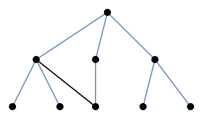

松弛与界限
约 5463 个字 15 行代码 7 张图片 预计阅读时间 18 分钟
最优性与松弛
我们需要考虑一个点\(\boldsymbol{x}\)是不是最优的。换句话说，我们需要找到一些最优性条件，这些条件可以为IP算法提供寻找最优解的终止准则。一个朴素但重要的想法是，算法可以找到一个递减序列和一个递增序列，去逼近最优值。那么，当迭代足够多次，这两个序列的会足够近，即可作为终止条件：\(\overline{Z}_s-\underline{Z}_t<\epsilon\)。因此，我们需要找到一个能找到这样的序列的算法。
下界很显然，可行域中每个\(\boldsymbol{x}\)都是最大化问题的一个下界。然而，有的问题找到一个可行解也并不简单。对于最大化问题的上界是相对具有挑战性的，这些被称为对偶界(dual bounds)。一个找上界最重要的方法是通过松弛(relaxation)，此方法有两种可能性：
- 扩大可行解的集合，以便在更大的集合上进行优化。
- 把目标函数替换为在所有原始可行解上具有相同或更大的函数。
Definition 2.1 (relaxation)
一个优化问题\(\max\{f(\boldsymbol{x}):\boldsymbol{x}\in \boldsymbol{T}\subseteq\mathbb{R}^n\}\)是原问题\(Z=\max\{\boldsymbol{c}(\boldsymbol{x}):\boldsymbol{x}\in\boldsymbol{X}\subseteq\mathbb{R}^n\}\)的松弛问题，是当满足以下条件：
- \(\boldsymbol{X}\subseteq\boldsymbol{T}\)
- \(f(\boldsymbol{x})\geq\boldsymbol{c}(\boldsymbol{x})\)对任意\(\boldsymbol{x}\in\boldsymbol{X}\)成立。
Proposition 2.1
如果\(\mathrm{RP}\)是一个\(\mathrm{IP}\)的松弛问题，则\(Z^{\mathrm{RP}}\geq Z\)。
Proof
如果\(\boldsymbol{x}^*\)是\(\mathrm{IP}\)的一个最优解，那么\(\boldsymbol{x}^*\in\boldsymbol{X}\subseteq\boldsymbol{T}\)且\(Z=\boldsymbol{c}(\boldsymbol{x}^*)\leq f(\boldsymbol{x}^*)\)。
当\(\boldsymbol{x}^*\in T\)，\(f(\boldsymbol{x}^*)\)是\(Z^{\mathrm{RP}}\)的一个下界，所以\(Z\leq f(\boldsymbol{x}^*)\leq Z^{\mathrm{RP}}\)。
那么，最后的问题是如何构建合适的松弛，一个最简单的方案就是线性规划松弛。
线性规划松弛
Definition 2.2 (linear programming relaxation)
对于整数规划\(\max\{\boldsymbol{c}\boldsymbol{x}:\boldsymbol{x}\in P\cap\mathbb{Z}^n\}\)，其约束公式为\(P=\{x\in\mathbb{R}^n_+:\boldsymbol{A}\boldsymbol{x}\leq\boldsymbol{b}\}\)。其线性规划松弛是一个线性规划问题\(Z^{\mathrm{LP}}=\max\{\boldsymbol{c}\boldsymbol{x}:\boldsymbol{x}\in P\}\)。
因为\(P\cap\mathbb{Z}^n\subseteq P\)且目标函数不变，这显然是一个松弛。请注意，更好的公式定义与线性规划松弛的定义密切相关，特别是，更好的公式能够给出更紧的(对偶)边界。
Proposition 2.2
设\(P_1,P_2\)是整数规划\(\max\{\boldsymbol{c}\boldsymbol{x}:\boldsymbol{x}\in\boldsymbol{X}\subseteq\mathbb{Z}^n\}\)，其中\(P_1\)比\(P_2\)更好。如果\(Z_i^{\mathrm{LP}}=\max\{\boldsymbol{c}\boldsymbol{x}:\boldsymbol{x}\in P_i\},i=1,2\)分别表示其关联的线性规划松弛，那么\(Z_1^{\mathrm{LP}}\leq Z_2^{\mathrm{LP}}\)。
Proof
由于\(P_1\)比\(P_2\)更好，那么\(P_1\subset P_2\)。目标函数都是一样的，显然\(Z_1^{\mathrm{LP}}\leq Z_2^{\mathrm{LP}}\)。
松弛不只是给出对偶界限，有时还允许我们证明最优性。
Proposition 2.3
- 如果松弛问题\(\mathrm{RP}\)是不可行的，那么原始问题也是不可行的。
- 令\(\boldsymbol{x}^*\)是\(\mathrm{RP}\)的一个最优解。若\(\boldsymbol{x}^*\in\boldsymbol{X}\)且\(f(\boldsymbol{x}^*)=\boldsymbol{c}(\boldsymbol{x}^*)\)，那么\(\boldsymbol{x}^*\in\boldsymbol{X}\)也是\(\mathrm{IP}\)的最优解。
Proof
- 如果\(\mathrm{RP}\)是不可行的，那么说明\(\boldsymbol{T}=\emptyset\)，由\(\boldsymbol{X}\subseteq\boldsymbol{T}\)，那么\(\boldsymbol{X}=\emptyset\)。
-
因为\(\boldsymbol{x}^*\in\boldsymbol{X}\)，则\(Z\geq\boldsymbol{c}(\boldsymbol{x}^*)=f(\boldsymbol{x}^*)=Z^{\mathrm{RP}}\)；
因为\(Z\leq Z^{\mathrm{RP}}\)，则\(\boldsymbol{c}(\boldsymbol{x}^*)=Z=Z^{\mathrm{RP}}\)。
例 2.1
下面是一个整数规划问题的线性规划松弛，观察它们的优化结果。
\[
\begin{align*}
\max\quad&7x_1+4x_2+5x_3+2x_4 \\
\text{s.t.}\quad&3x_1+3x_2+4x_3+2x_4\leq 6\\
&\boldsymbol{x}\in\{0,1\}^4
\end{align*}
\]
Solution
此整数规划问题的线性规划松弛的最优解是\(\boldsymbol{x}^*=(1,1,0,0)\)。由于\(\boldsymbol{x}^*\)的各个分量是整数，则它也是此整数规划问题的最优解。借此例子，我们使用Python的pulp包来验证一下。
-
线性规划：
import pulp # 定义问题 lp = pulp.LpProblem("LP", pulp.LpMaximize) # 定义变量 x1 = pulp.LpVariable('x1', lowBound=0, upBound=1, cat=pulp.LpContinuous) x2 = pulp.LpVariable('x2', lowBound=0, upBound=1, cat=pulp.LpContinuous) x3 = pulp.LpVariable('x3', lowBound=0, upBound=1, cat=pulp.LpContinuous) x4 = pulp.LpVariable('x4', lowBound=0, upBound=1, cat=pulp.LpContinuous) # 定义目标函数 lp += 7 * x1 + 4 * x2 + 5 * x3 + 2 * x4 # 添加约束 lp += 3 * x1 + 3 * x2 + 4 * x3 + 2 * x4 <= 6 lp.solve() # 求解问题 for v in lp.variables(): # 输出解 print(f"{v.name} = {v.varValue}")- 整数规划：只需把上述代码的
pulp.LpContinuous改为pulp.LpInteger即可。
- 整数规划：只需把上述代码的
组合松弛
当松弛问题是组合优化问题时，我们就需要组合松弛(combinatorial relaxation)。在许多情况下，如下面的例子，松弛是一个可以快速解决的简单问题。
旅行商问题
对于有向图\(D=(V,A)\)，其弧权重用\(c_{ij},(i,j)\in A\)表示。一个旅程(tour)就是一个不包含子旅程(subtour)的一个分配(assignment)。
\[
\begin{align*}
Z^{\mathrm{TSP}}=&\min\limits_{T\subseteq A}\left\{\sum\limits_{(i,j)\in T}c_{ij}:T\text{是一个旅程}\right\}\quad\geq \\
Z^{\mathrm{ASS}}=&\min\limits_{T\subseteq A}\left\{\sum\limits_{(i,j)\in T}c_{ij}:T\text{是一个分配}\right\}
\end{align*}
\]
理解1
首先，文中此处旅程特指汉密尔顿(Hamiltonian)回路，所以子旅程就是图中一个圈(circle)但不包含所有节点。而分配是指分配问题的结果，这个结果的特征是\(T\)是一个由不相交的圈构成的图，且不包含孤立的节点(书本Page 8的图1.2）。
理解2
同一个图中，一个分配和一个旅程的边数一定是相同的，因为圈的边数等于点的数量。而分配问题选边比旅行商更加灵活(约束更少)，所以其边权重和一定是小于等于旅行商问题的。
对称旅行商问题
与旅行商问题紧密相关的是对称旅行商问题(Symmetric Traveling Salesman Problem, STSP)，它考虑的是无向图\(G=(V,E)\)，边的权重由\(c_e,e\in E\)表示。该问题是寻找最小权的无向旅程(undirected tour)。
Definition 2.3 (\(1\)-tree)
\(1\)-树是一个子图，它的节点\(1\)有两条相邻的边，其余节点\(\{2,3,...,n\}\)构成一棵树。
据观察，我们可以发现无向旅程与\(1\)-树类似的特点。它的节点\(1\)有两条相邻的边，其余节点构成一条路径(path)，而路径是树的特殊情况。据此，我们可以得到以下松弛：
\[
\begin{align*}
Z^{\mathrm{STSP}}=&\min\limits_{T\subseteq E}\left\{\sum\limits_{e\in T}c_e:T\text{是一个无向旅程}\right\}\quad\geq \\
Z^{1\text{-}\mathrm{tree}}=&\min\limits_{T\subseteq E}\left\{\sum\limits_{e\in T}c_e:T\text{是}1\text{-}\mathrm{tree}\right\}
\end{align*}
\]
理解1
一个无向旅程在图形上的特点是，有且仅有一个回路的连通图，如下左图所示(蓝线构成一条路径)。而\(1\)-树就是一棵树新增了一条边，形成了一个回路，如下右图所示(蓝线构成一棵树)。
-

图 2.1 无向旅程 -
 图 2.2 1-tree
{kind=link}
理解2
无向旅程就是特殊的\(1\)-树，在节点数相同的情况下，它们的边数相同。但是构成一条路径的要求更高，树的条件更宽松，所以它更有机会取到权重更小的边。
二次\(0\)-\(1\)问题
二次\(0\)-\(1\)问题(The Quadratic \(0\)-\(1\) Problem)的形式化描述为：
\[
\max\quad\left\{\sum\limits_{i,j:1\leq i<j\leq n}q_{ij}x_ix_j-\sum\limits_{j=1}^np_jx_j:\boldsymbol{x}\neq\boldsymbol{0},\boldsymbol{x}\in\{0,1\}^n\right\}
\]
把所有\(q_{ij}<0\)的项都替换为\(0\)，可以得到如下松弛：
\[
\max\quad\left\{\sum\limits_{i,j:1\leq i<j\leq n}\max\{q_{ij},0\}x_ix_j-\sum\limits_{j=1}^np_jx_j:\boldsymbol{x}\neq\boldsymbol{0},\boldsymbol{x}\in\{0,1\}^n\right\}
\]
在后面的章节中，将展示如何将这种松弛作为一系列最大流量问题来解决。
理解：很简单，去掉了很多小于\(0\)的加法项，问题的最大值不受影响。
整数背包问题
整数背包问题(The Integer Knapsack Problem)，它的可行域表示为\(\boldsymbol{X}=\{\boldsymbol{x}\in\mathbb{Z}^n_+:\sum\limits_{j=1}^na_jx_j\leq b\}\)，它的松弛为：
\[
\boldsymbol{X}'=\left\{\boldsymbol{x}\in\mathbb{Z}^n_+:\sum\limits_{j=1}^n\lfloor a_j\rfloor x_j\leq\lfloor b\rfloor\right\}
\]
理解
以下两个图为例。图2.3是\(x_2+\frac{3}{2}x_1\leq\frac{3}{2}\)的情况，松弛之后为\(x_2+x_1\leq 1\)，没有损失也没有增加任何正整数点。图2.4是\(x_2+\frac{3}{4}x_1\leq\frac{3}{2}\)的情况，松弛之后为\(x_2\leq 1\)，增加了无数个正整数点。
{kind=link}
{kind=link}
Proof
我们需要证明上面的\(\boldsymbol{X}\subseteq\boldsymbol{X}'\)。我们把\(\{a\}\triangleq a-\lfloor a\rfloor\)定义为\(a\)的小数部分。
那么\(\sum\limits_{j=1}^na_jx_j\leq b_j\)可以表示为\(\sum\limits_{j=1}^n(\lfloor a_j\rfloor x_j+\{a_j\}x_j)\leq\lfloor b\rfloor+\{b\}\)
如果\(\sum\limits_{j=1}^n\{a_j\}x_j\geq\{b\}\)，那么显然\(\sum\limits_{j=1}^n\lfloor a_j\rfloor x_j\leq\lfloor b\rfloor\)。
如果\(\sum\limits_{j=1}^n\{a_j\}x_j<\{b\}\)，即\(\{b\}-\sum\limits_{j=1}^n\{a_j\}x_j>0\)。因为\(\forall j,a_j>0,x_j>0\)且\(1>\{b\}\geq0\)，所以\(1>\{b\}-\sum\limits_{j=1}^n\{a_j\}x_j\geq0\)。由于\(\sum\limits_{j=1}^n\{a_j\}x_j\)和\(\lfloor b\rfloor\)都是整数，所以\(\sum\limits_{j=1}^n\lfloor a_j\rfloor x_j\leq\lfloor b\rfloor+(\{b\}-\sum\limits_{j=1}^n\{a_j\}x_j)\)等价于\(\sum\limits_{j=1}^n\lfloor a_j\rfloor x_j\leq\lfloor b\rfloor\)。
拉格朗日松弛
假设一个整数规划问题的形式是\(Z=\max\{\boldsymbol{c}\boldsymbol{x}:\boldsymbol{A}\boldsymbol{x}\leq\boldsymbol{b},\boldsymbol{x}\in\boldsymbol{X}\subseteq\mathbb{Z}^n\}\)。如果这个问题很难直接求解，一种可能的方法是去掉约束\(\boldsymbol{A}\boldsymbol{x}\leq\boldsymbol{b}\)变为一个松弛问题\(Z'=\max\{\boldsymbol{c}\boldsymbol{x}:\boldsymbol{x}\in\boldsymbol{X}\}\)。在上面的旅行商问题的松弛问题，实际上是去掉子路径约束得而变成分配问题。这种思想在后面的章节中有详细的介绍，该思想不仅仅是去掉复杂的约束，而是用拉格朗日乘子(对偶变量)将它们添加到目标函数当中。
Proposition 2.4
令\(Z(u)=\max\{\boldsymbol{c}\boldsymbol{x}+u(\boldsymbol{b}-\boldsymbol{A}\boldsymbol{x}):\boldsymbol{x}\in\boldsymbol{X}\}\)。那么\(Z(u)\geq Z,\forall u\geq0\)。
Proof
令\(\boldsymbol{x}^*\)是该整数规划问题\(Z\)的一个最优解。
因为\(\boldsymbol{x}^*\)是可行解，所以\(\boldsymbol{x}^*\in\boldsymbol{X}\)同时也满足\(\boldsymbol{A}\boldsymbol{x}^*\leq\boldsymbol{b}\)。
那么，当\(u\geq0\)，则\(\boldsymbol{c}\boldsymbol{x}^*\leq\boldsymbol{c}\boldsymbol{x}^*+u(\boldsymbol{b}-\boldsymbol{A}\boldsymbol{x}^*)\leq Z(u)\)。
对偶
对于线性规划，对偶性提供了一种标准的方法来获得上界，因此很自然地会问是否有可能找到整数规划的上界。对偶的重要性质是任何可行解的值都提供了目标值\(Z\)的上界。
Definition 2.4 (weak-dual pair, strong-dual pair)
以下两个问题：
\[
\begin{align*}
(\mathrm{IP})\quad Z=&\max\{\boldsymbol{c}(\boldsymbol{x}):\boldsymbol{x}\in\boldsymbol{X}\} \\
(\mathrm{D})\quad W=&\min\{\boldsymbol{w}(\boldsymbol{u}):\boldsymbol{u}\in\boldsymbol{U}\}
\end{align*}
\]
当\(\forall\boldsymbol{x}\in\boldsymbol{X},\forall\boldsymbol{u}\in\boldsymbol{U},\boldsymbol{c}(\boldsymbol{x})\leq\boldsymbol{w}(\boldsymbol{u})\)时，它们形成弱对偶对。当\(Z=W\)时，形成强对偶对。
对偶问题相对于松弛问题的优点是任何对偶可行解都提供了\(Z\)的上界，而\(\mathrm{IP}\)的松弛问题必须求解到最优才能提供这样的上界。那是否存在松弛问题也符合对偶性质呢？毫不奇怪，线性规划松弛立即导致弱对偶。
Proposition 2.5
一个整数规划问题\(Z=\max\{\boldsymbol{c}\boldsymbol{x}:\boldsymbol{A}\boldsymbol{x}\leq\boldsymbol{b},\boldsymbol{x}\in\mathbb{Z}^n_+\}\)和它的线性规划松弛问题\(W^{\mathrm{LP}}=\min\{\boldsymbol{u}\boldsymbol{b}:\boldsymbol{u}\boldsymbol{A}\geq\boldsymbol{c},\boldsymbol{u}\in\mathbb{R}^m_+\}\)构成弱对偶对。
Proof
由\(\boldsymbol{A}\boldsymbol{x}\leq\boldsymbol{b}\)可知，\(\boldsymbol{u}\boldsymbol{A}\boldsymbol{x}\leq\boldsymbol{u}\boldsymbol{b}\)；由\(\boldsymbol{u}\boldsymbol{A}\geq\boldsymbol{c}\)，则\(\boldsymbol{c}\boldsymbol{x}\leq\boldsymbol{u}\boldsymbol{A}\boldsymbol{x}\)。
所以\(\boldsymbol{c}\boldsymbol{x}\leq\boldsymbol{u}\boldsymbol{b}\)，即\(W^{\mathrm{LP}}\geq Z\)，得证弱对偶对。
Proposition 2.6
假设\(\mathrm{IP}\)与\(\mathrm{D}\)是弱对偶对。
- 如果\(\mathrm{D}\)是无界的(unbounded)，那么\(\mathrm{IP}\)是无解的(infeasible)。
- 如果\(\boldsymbol{x}^*\in\boldsymbol{X}\)且\(\boldsymbol{u}^*\in\boldsymbol{U}\)满足\(\boldsymbol{c}(\boldsymbol{x}^*)=\boldsymbol{w}(\boldsymbol{u}^*)\)，那么\(\boldsymbol{x}^*\)是\(\mathrm{IP}\)的最优解且\(\boldsymbol{u}^*\)是\(\mathrm{D}\)的最优解。
匹配问题对偶
A Matching Problem：给定一个图\(G=(V,E)\)，一个匹配(matching)\(M\subseteq E\)是一个由不相交边的集合。一个节点覆盖(covering by nodes)是一个节点集合\(R\subseteq V\)，使得每条边至少有一个端点在\(R\)中。
如下图2.5所示的图\(G\)，边\((1,2),(3,4),(5,6)\)和\((7,8)\)是图\(G\)的一个匹配，点\(\{2,3,6,8\}\)是该匹配的一个节点覆盖。
{kind=link}
图 2.5 图匹配的例子
Proposition 2.7
寻找最大基数匹配(maximum cardinality matching)的问题：\(\max\limits_{M\subseteq E}\quad\{|M|:M\text{是一个匹配}\}\)，与寻找节点覆盖的最小基数(minimum cardinality covering by nodes)问题：\(\min\limits_{R\subseteq V}\quad\{|R|:R\text{是一个节点覆盖}\}\)形成一个弱对偶对。
Proof
令\(M\)是一个匹配：\(M=\{(i_1,j_1),(i_2,j_2),...,(i_k,j_k)\}\)，那么\(2k\)个节点是互不相同的：\(\{i_1,j_1,i_2,j_2,...,i_k,j_k\}\)。任意的节点覆盖\(R\)必须包含每个\(\{i_s,j_s\},\forall s=1,2,...,k\)中至少一个节点。所以，\(|R|\geq k=|M|\)。
我们也可以使用线性规划对偶来建立这个结果。
Definition 2.5 (node-edge incidence matrix)
图\(G=(V,E)\)的节点-边关联矩阵是一个\(0\)-\(1\)矩阵\(\boldsymbol{A}_{n\times m}\)，其中\(n=|V|,m=|E|\)。若节点\(j\)是边\(e\)的端点，则\(a_{j,e}=1\)，否则\(a_{j,e}=0\)。
节点-边关联矩阵的特点是：
- 列表示边的两个节点对应的节点，所以每列要么有两个\(1\)，要么全为\(0\)。
- 行表示有几条边选择了该节点。
最大基数匹配问题现在可以公式化为整数规划：
\[
Z=\max\quad\{\boldsymbol{1}\boldsymbol{x}:\boldsymbol{A}\boldsymbol{x}\leq\boldsymbol{1},\boldsymbol{x}\in\mathbb{Z}^m_+\}
\]
最小基数节点覆盖问题可被公式化为：
\[
W=\min\quad\{\boldsymbol{1}\boldsymbol{y}:\boldsymbol{y}\boldsymbol{A}\geq\boldsymbol{1},\boldsymbol{y}\in\mathbb{Z}^n_+\}
\]
设\(Z^{\mathrm{LP}}\)和\(W^{\mathrm{LP}}\)为对应的线性规划松弛问题所对应的值，则\(Z\leq Z^{\mathrm{LP}}=W^{\mathrm{LP}}\leq W\)，再次建立了对偶关系。
理解
\(\boldsymbol{x}\)是边向量，分量为\(0\)表示该边未被选择，反之\(1\)表示被选择。所以，\(\boldsymbol{A}\boldsymbol{x}\)表示由\(\boldsymbol{x}\)选择边之后，各个节点连接边的数量。\(\boldsymbol{y}\)是点向量，分量\(0\)表示不选择该点，反之\(1\)表示选择该点。所以，\(\boldsymbol{y}\boldsymbol{A}\)表示由\(\boldsymbol{y}\)选择点之后，图中选择该点的边数。
例 2.2
如下图2.6这个图对应的匹配问题。从这个例子可以看出上述两个问题之间并没有强对偶性。
-
Solution
首先，可以观察到\(Z=1\)和\(W=2\)(边匹配只能选出\(1\)条边，但点覆盖必须有\(2\)个点才能覆盖)。
而对应的松弛问题，\(x_{e_1}=x_{e_2}=x_{e_3}=1/2\)是匹配问题的松弛问题的解；\(y_1=y_2=y_3=1/2\)是点覆盖问题的松弛问题的解。所以\(Z^{\mathrm{LP}}=W^{\mathrm{LP}}=3/2\)。
-

图 2.6 匹配与点覆盖的对偶性
稍后，我们将看到当图\(G\)是二部图时，强对偶关系在这对问题中成立。
超可加对偶
Definition 2.6 (superadditive)
如果\(F(0)=0\)且\(F(\boldsymbol{u})+F(\boldsymbol{v})\leq F(\boldsymbol{u}+\boldsymbol{v}),\forall \boldsymbol{u},\boldsymbol{v}\in\mathbb{R}^m\)，则称函数\(F:\mathbb{R}^m\rightarrow\mathbb{R}\)是超可加的。
显然，它是非递减的(nondecreasing)：若\(F(\boldsymbol{u})\leq F(\boldsymbol{v}),\forall \boldsymbol{u},\boldsymbol{v}\in\mathbb{R}^m\)，则\(\boldsymbol{u}\leq\boldsymbol{v}\)。
我们提出超可加函数的目的是讨论一种线性规划对偶的推广，它的目标函数不是线性的。比如，一个简单的超可加的非线性函数\(F^1:\mathbb{R}\rightarrow\mathbb{R}\)，\(F^1(u)=\lfloor u\rfloor\)。另外的例子就是整数规划的值也是非线性的：\(F^2:\mathbb{R}^m\rightarrow\mathbb{R}\)，\(F^2(\boldsymbol{d})=\max\{\boldsymbol{c}\boldsymbol{x}:\boldsymbol{A}\boldsymbol{x}\leq \boldsymbol{d},\boldsymbol{x}\in\mathbb{Z}^n_+\}\)。
Theorem 2.1
给定一个可行的整数规划问题，且它的线性规划松弛问题有有限个最优值：
\[
\max\{\boldsymbol{c}\boldsymbol{x}:\boldsymbol{A}\boldsymbol{x}\leq\boldsymbol{b},\boldsymbol{x}\in\mathbb{Z}^n_+\}=\min\{F(\boldsymbol{b}):F(\boldsymbol{a}_j)\geq c_j,j\in[1,n],F\in\mathcal{F}\}
\]
其中，\(\mathcal{F}\)是非递减超可加函数的集合；\(\boldsymbol{a}_j\)是\(\boldsymbol{A}\)的列向量。
Proof
显然，由非递减性可知，\(F(\boldsymbol{b})\geq F(\boldsymbol{A}\boldsymbol{x})\)。
根据定义2.6可知，\(F(\boldsymbol{A}\boldsymbol{x})=F\left(\sum\limits_{j=1}^n\boldsymbol{a}_j\boldsymbol{x}\right) =\sum\limits_{j=1}^nF(\boldsymbol{a_j})\boldsymbol{x}\)。
由\(F(\boldsymbol{a}_j)\geq c_j\)可知，\(\sum\limits_{j=1}^nF(\boldsymbol{a_j})\boldsymbol{x}\geq \boldsymbol{c}\boldsymbol{x}\)，也即\(F(\boldsymbol{b})\geq \boldsymbol{c}\boldsymbol{x}\)。
线性规划与多胞体
此小节将回忆一些线性规划的基本性质，并强调一些多胞体的表示方法和性质，以便在后面的章节中使用。考虑这样的线性规划问题\(\max\{\boldsymbol{c}\boldsymbol{x}:\boldsymbol{x}\in P\}\)，其可行域为\(P=\{\boldsymbol{x}\in\mathbb{R}^n_+:\boldsymbol{A}\boldsymbol{x}\leq\boldsymbol{b}\}\)，其中\(\boldsymbol{A}\)是\(m\times n\)的矩阵。其对偶问题为\(\min\{\boldsymbol{u}\boldsymbol{b}:\boldsymbol{u}\in U\}\)，其可行域为\(U=\{\boldsymbol{u}\in\mathbb{R}^m_+:\boldsymbol{u}\boldsymbol{A}\geq \boldsymbol{c}\}\)。我们感兴趣的是可行性和最优性的特点。
Lemma 2.1 (Farkas' Lemma)
\(P\neq\emptyset\)当且仅当\(\boldsymbol{u}\boldsymbol{b}\geq0,\forall\boldsymbol{u}\in\mathbb{R}^m_+\)使得\(\boldsymbol{u}\boldsymbol{A}\geq0\)。
类似地，\(U\neq\emptyset\)当且仅当\(\boldsymbol{c}\boldsymbol{x}\leq,\forall \boldsymbol{x}\in\mathbb{R}^n_+\)使得\(\boldsymbol{A}\boldsymbol{x}\leq0\)。
Definition 2.7 (extreme point, ray,extreme ray)
给定一个非空的多胞体\(P=\{\boldsymbol{x}\in\mathbb{R}^n_+"\boldsymbol{A}\boldsymbol{x}\leq\boldsymbol{b}\}\)，
- 当\(\boldsymbol{x}=\lambda\boldsymbol{x}^1+(1-\lambda)\boldsymbol{x}^2,0<\lambda<1,\boldsymbol{x}^1,\boldsymbol{x}^2\in P\)使得\(\boldsymbol{x}=\boldsymbol{x}^1=\boldsymbol{x}^2\)，则说明\(\boldsymbol{x}\in P\)是\(P\)的一个极点。
- 当\(\boldsymbol{r}\neq\bold0\)且\(\boldsymbol{x}\in P\)使得\(\boldsymbol{x}+\mu \boldsymbol{r}\in P,\forall\mu\in\mathbb{R}^1_+\)，则称\(\boldsymbol{r}\)是一条射线。
- 当\(\boldsymbol{r}=\mu_1\boldsymbol{r}^1+\mu_2\boldsymbol{r}^2,\mu_1,\mu_2>0\)，其中\(\boldsymbol{r}^1,\boldsymbol{r}^2\)是\(P\)的射线，使得\(\exists\alpha>0,\boldsymbol{r}^1=\alpha\boldsymbol{r}^2\)，则称\(\boldsymbol{r}\)是一条极射线。
Theorem 2.2 (Minkowski)
任意非空多胞体\(P=\{\boldsymbol{x}\in\mathbb{R}^n_+:\boldsymbol{A}\boldsymbol{x}\leq\boldsymbol{b}\}\)可以表示为：
\[
P=\left\{\boldsymbol{x}\in\mathbb{R}^n:\boldsymbol{x}=\sum\limits_{s=1}^S\lambda_s\boldsymbol{x}^s+\sum\limits_{t=1}^T\mu_t\boldsymbol{v}^t,\sum\limits_{s=1}^S\lambda_s=1,\lambda\in\mathbb{R}^S_+,\mu\in\mathbb{R}^T_+\right\}
\]
其中，\(\{\boldsymbol{x}^s\}_{s=1}^S\)是\(P\)的极点集合，\(\{\boldsymbol{v}^t\}_{t=1}^T\)是\(P\)的极射线集合。
例 2.3
如下图2.7所示的一个多胞体：
\[
U=\{\boldsymbol{u}\in\mathbb{R}^2_+:4u_1+2u_2\geq2,-2u_1+3u_2\geq-3,3u_1-u_2\geq1\}
\]
它的另一个表达形式可以是？
{kind=link}
图 2.7 多胞体示例
Solution
根据它的极点\((\frac{2}{5},\frac{1}{5})^\top,(\frac{1}{2},0)^\top,(\frac{3}{2},0)^\top\)和它的极射线\((3,2)^\top,(1,2)^\top\)，可以写成如下形式：
\[
\begin{align*}
U=\{&\boldsymbol{u}\in\mathbb{R}^2:\boldsymbol{u}=\left[\begin{array}{c}\frac{2}{5} \\ \frac{1}{5}\end{array}\right]\lambda_1+\left[\begin{array}{c}\frac{1}{2} \\ 0\end{array}\right]\lambda_2+\left[\begin{array}{c}\frac{3}{2} \\ 0\end{array}\right]\lambda_3+\left[\begin{array}{c}3 \\ 2\end{array}\right]\mu_1+\left[\begin{array}{c}1 \\ 3\end{array}\right]\mu_2, \\
&\lambda_1+\lambda_2+\lambda_3=1,(\lambda,\mu)\in\mathbb{R}^3_+\times\mathbb{R}^2_+\}
\end{align*}
\]
此外，还有一种陈述：如果\(Q=\{(\boldsymbol{x},\boldsymbol{w})\in\mathbb{R}^n\times\mathbb{R}^p:\boldsymbol{A}\boldsymbol{x}+\boldsymbol{B}\boldsymbol{w}\leq\boldsymbol{d}\}\)和\(P=\mathrm{proj}_\boldsymbol{x}(Q)\)，那么\(P\)也是一个多胞体。现在，我们就回到原始线性规划和对偶线性规划问题上来。
Proposition 2.8
考虑线性规划\(Z=\max\{\boldsymbol{c}\boldsymbol{x}:\boldsymbol{x}\in P\}\)，其可行域为\(P=\{\boldsymbol{x}\in\mathbb{R}^n_+:\boldsymbol{A}\boldsymbol{x}\leq\boldsymbol{b}\}\)。其对偶问题为\(W=\min\{\boldsymbol{u}\boldsymbol{b}:\boldsymbol{u}\in U\}\)，其可行域为\(U=\{\boldsymbol{u}\in\mathbb{R}^m_+:\boldsymbol{u}\boldsymbol{A}\geq\boldsymbol{c}\}\)。
- 若\(P\neq\emptyset\)中存在(极)射线\(\boldsymbol{r}\)使得\(\boldsymbol{c}\boldsymbol{r}>0\)，则\(U\neq\emptyset\)且\(Z\rightarrow+\infty\)。
- 若\(U\neq\emptyset\)中存在(极)射线\(\boldsymbol{v}\)使得\(\boldsymbol{v}\boldsymbol{b}<0\)，则\(P\neq\emptyset\)且\(W\rightarrow-\infty\)。
- 若\(P\neq\emptyset\)且\(U\neq\emptyset\)，则\(Z=\max\limits_{s=1,2,...,S}\boldsymbol{c}\boldsymbol{x}^s=\min\limits_{k=1,2,...,K}\boldsymbol{u}^k\boldsymbol{b}=W\)，其中\(\{\boldsymbol{x}^s\}_{s=1}^S,\{\boldsymbol{u}^k\}_{k=1}^K\)分别是\(P\)和\(U\)的极点。
原始边界：贪婪和局部搜索
现在，我们简要地考虑一些获得可行解和原始界的简单方法，这一主题将在第13章中讨论。
启发式和限制
松弛的反面就是限制(restriction)。
Definition 2.8 (restriction)
一个限制问题(\(\mathrm{RE}\))\(Z^{\mathrm{RE}}=\max\{f(\boldsymbol{x}):\boldsymbol{x}\in T\subseteq\mathbb{R}^n\}\)是整数规划\(Z=\max\{\boldsymbol{c}(\boldsymbol{x}):\boldsymbol{x}\in\boldsymbol{X}\subseteq\mathbb{R}^n\}\)的限制，当满足以下条件：
- \(T\subseteq\boldsymbol{X}\)
- \(f(\boldsymbol{x})\leq\boldsymbol{c}(\boldsymbol{x}),\forall \boldsymbol{x}\in\boldsymbol{X}\)
Proposition 2.9
如果\(\mathrm{RE}\)是\(\mathrm{IP}\)的一个限制，其最优值为\(\boldsymbol{x}^{\mathrm{RE}}\)。\(\boldsymbol{x}^{\mathrm{RE}}\)是\(\mathrm{IP}\)的一个可行解且\(\boldsymbol{c}(\boldsymbol{x}^{\mathrm{RE}})\leq Z\)。
限制的目的也是为了是问题变成一个容易的问题。最简单的做法是固定某些变量的值，用等式代替不等式，或者添加额外的约束。
例 2.4
考虑一个限容的批件生产问题，这个问题与批件生产问题不同点在于，替换约束\(y_t\leq Mx_t\)为\(y_t\leq C_tx_t\)，也即为每个时期设置了生产量的上限。试着添加假设，以减少约束条件。
Solution
我们可以设置每个时期按最大容量生产，以减少约束条件，即\(y_t=C_tx_t\)。那么原问题变为：
\[
\begin{align*}
\min\quad&\sum\limits_{t=1}^n(f_t+C_tc_t)x_t \\
\text{s.t.}\quad&\sum\limits_{u=1}^tC_ux_u\geq\sum\limits_{u=1}^td_u\quad t=1,2,...,n \\
& x_t\in\{0,1\}
\end{align*}
\]
这种生产总是处于满负荷状态的批量问题通常可以快速求解，从而得到一个好的可行解。
贪心和局部启发式搜索
贪婪启发式的思想是从空集开始构建一个解决方案，迭代每一步都根据当前阶段有限的信息判断“最佳”结果。
例 2.5
对于\(0\)-\(1\)背包问题，考虑这个实例：
\[
\begin{align*}
\max\quad&12x_1+8x_2+17x_3+11x_4+6x_5+2x_6+2x_7 \\
\text{s.t.}\quad&4x_1+3x_2+7x_3+5x_4+3x_5+2x_6+3x_7\leq9 \\
&\boldsymbol{x}\in\{0,1\}^7
\end{align*}
\]
尝试使用贪心法求解这个问题。
Solution
观察到每个变量的单位价值\(\frac{a_j}{c_j}\geq\frac{a_{j+1}}{c_{j+1}},j=1,2,...,n-1\)，所以贪心法就是每次都装单位价值最大的：
- \(\frac{c_1}{a_1}\)最大，则\(x_1=1\)，背包空间余\(5\)。
- 剩下的\(\frac{c_2}{a_2}\)最大，则\(x_2=1\)，背包空间余\(2\)。
- \(x_3=x_4=x_5=0\)：因为背包装不下了。
- 剩下的\(\frac{c_6}{a_6}\)最大，则\(x_6=1\)，背包空间余\(0\)。
- \(x_7=0\)，背包装不下。
所以，贪心算法得到解为\(\boldsymbol{x}^G=(1,1,0,0,0,1,0)\)，最优值为\(Z^G=\boldsymbol{c}\boldsymbol{x}^G=22\)。
一旦找到初始可行解，称为现任解(incumbent)，就很自然地尝试改进该解，局部搜索启发式的思想是定义一个邻近现任解的解的邻域。然后找到邻域中的最佳解。如果它比现任解好，则替换它，并重复该过程。否则，现任者相对于邻域是“局部最优的”，并且启发式终止。
例 2.6
考虑一个无容量限制的设施位置问题，\(m=6\)个客户，\(n=4\)个站点，成本如下所示：
\[
(c_{ij})=\left[\begin{array}{cccc}
6&2&3&4 \\
1&9&4&11 \\
15&2&6&3 \\
9&11&4&8 \\
7&23&2&9 \\
4&3&1&5
\end{array}\right],\boldsymbol{f}=[21,16,11,24]
\]
设\(N=\{1,2,3,4\}\)表示仓库集合，并且\(S\subseteq N\)表示选择的仓库集合，则相关成本表示为：
\[
c(S)=\sum\limits_{i=1}^6\min\limits_{j\in S}c_{ij}+\sum\limits_{j\in S}f_j
\]
尝试使用贪心法求解。
Solution
观察到\(S^0=\{1,2\}\)是一个初始可行解，\(c(S^0)=(2+1+2+9+7+3)+21+16=61\)。接下来就是定义\(S\)的邻域\(Q(S)\)，一种可能的方法是通过添加或删除单个元素获得的集合视为\(S\)的邻域。
\(Q(S^0)=\{\{1\},\{2\},\{1,2,3\},\{1,2,4\}\}\)，其成本分别为\(c(\{1\})=63,c(\{2\})=66,c(\{1,2,3\})=60,c(\{1,2,4\})=84\)。则新的现任解为\(S^1=\{1,2,3\}\)。同理，有以下迭代：
- \(S^1=\{1,2,3\}\)，则\(Q(S^1)=\{\{1,2\},\{1,3\},\{2,3\},\{1,2,3,4\}\}\)。
- \(S^2=\{2,3\}\)，则\(Q(S^2)=\{\{2\},\{3\},\{1,2,3\},\{2,3,4\}\}\)。
- \(S^3=\{3\}\)，则\(Q(S^3)=\{\{1,3\},\{2,3\},\{3,4\},\emptyset\}\)。
邻域内的解没有办法再改进现任解了，因此\(S^3=\{3\}\)是贪心法得到的局部最优解。
例 2.7
一个图的均分问题(The Graph Equipartition Problem)。给定一个图\(G=(V,E)\)，\(n=|V|\)。问题是找到一个节点真子集\(S\subset V\)，要求\(|S|=\lfloor\frac{n}{2}\rfloor\)。目标是割集\(\delta(S,V\setminus S)\)中的边数最小，其中\(\delta(S,V\setminus S)=\{(i,j)\in E:i\in S,j\in V\setminus S\}\)。
我们考虑一个\(6\)节点的例子，其边集为\(\{(1,4),(1,6),(2,3),(2,5),(2,6),(3,4),(3,5),(4,6)\}\)。请使用贪心法找到局部最优解。
Solution
我们首先定义邻域的求解方法。由于可行集\(S\)的大小相同，所以一种可能的方法是将\(S\)中的一个元素替换为一个不在\(S\)中的元素。这样的替换都视为\(S\)的邻域。
设\(S^0=\{1,2,3\}\)，则\(\delta(S^0,V\setminus S^0)=\{(1,4),(1,6),(2,5),(2,6),(3,4),(3,5)\}\)，其成本为\(c(S^0)=|\delta(S^0,V\setminus S^0)|=6\)。其领域\(Q(S^0)=\{(1,2,4),(1,2,5),(1,2,6),(1,3,4),(1,3,5),(1,3,6),(2,3,4),(2,3,5),(2,3,6)\}\)，其对应的成本为\(c(T)=(6,5,4,4,5,6,5,2,5)\)。
那么，新的现任解为\(S^1=\{2,3,5\}\)，其成本为\(c(S^1)=2\)。
并且，在\(Q(S^1)\)中没有更好的解了，那么\(S^1\)就是局部最优解。